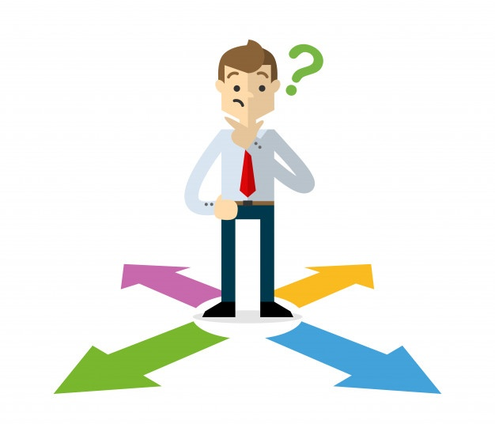
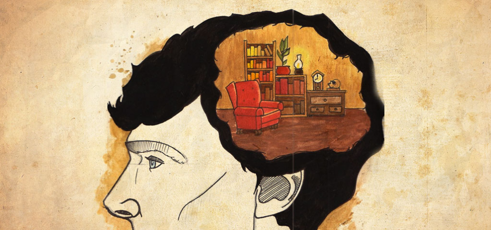

Sense of Direction
Sense of Direction is the ability to know one's location and perform wayfinding. It is related to cognitive maps, spatial awareness, and spatial cognition. Sense of direction can be impaired by brain damage, such as in the case of topographical disorientation.

Humans create spatial maps whenever they go somewhere. Neurons called place cells inside the hippocampus fire individually while a person makes their way through an environment.

This was first discovered in rats, when the neurons of the hippocampus were recorded. Certain neurons fired whenever the rat was in a certain area of its environment. These neurons form a grid when they are all put together on the same plane. We get our sense of direction when we match up spatial maps we have stored in the hippocampus, to the pattern of firing neurons when we are trying to find our way back or trying to find our car in the parking lot.
